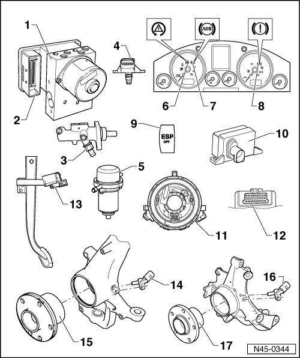
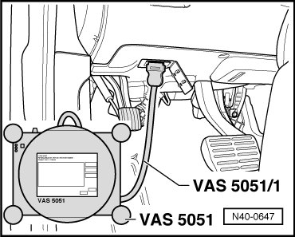

Brake Booster Vacuum Sensor: Locations
Electrical and Electronic Component Locations

1 Anti-lock Brake System (ABS) hydraulic unit (N55)
• Component location: In right side plenum chamber.
The hydraulic unit consists of the components:
• ABS hydraulic pump (V64).
• Valve block (contains the in/outlet valves).
• The ABS hydraulic pump (V64) and valve block must not be separated from one another.
• From 11.06 with brake pressure sensor (G201)
2 ABS control module (w/Electronic Differential Lock (EDL)) (J104)
• Component location: At hydraulic unit on right side of plenum chamber.
• Do not disconnect connector before successfully completing On Board Diagnostic (OBD). Switch ignition off before separating connector.
3 Brake pressure sensor (G201)
• Component location: through calendar week 48/06 on brake master cylinder.
• Removing and installing, refer to --> [ Brake Pressure Sensor 1 ] Service and Repair.
• From 11.06 in the ABS hydraulic unit (N55)
4 Brake booster pressure sensor (G294)
• Only installed on vehicles with a gas engine and automatic transmission.
• Component location: In vacuum hose to brake booster.
5 Brake system vacuum pump (V192)
• Only installed on vehicles with a gas engine and automatic transmission.
• Component location: In the right front engine compartment.
• Removing and installing, refer to --> [ Brake System Vacuum Pump ] Brake System Vacuum Pump.
6 Accelerated Slip Regulation/Electronic Stabilization Program (ASR/ESP) control lamp (K155)
• Component location: In the instrument cluster.
Function, refer to --> [ Level Control System Indicator Lamps ] Level Control System Indicator Lamps.
7 ABS warning lamp (K47)
• Component location: In the instrument cluster.
Function, refer to --> [ Level Control System Indicator Lamps ] Level Control System Indicator Lamps.
8 Brake system warning lamp (K118)
• Component location: In the instrument cluster.
Function, refer to --> [ Level Control System Indicator Lamps ] Level Control System Indicator Lamps.
9 ASR/ESP button (E256)
• Component location: in center console.
10 ESP sensor unit (G419)
• Component location: Beneath center console.
• Combined transverse acceleration sensor (G200), rotation rate sensor (G202) and longitudinal acceleration sensor (G251)
• Combined in one housing.
• Observe installation instructions, refer to --> [ Electronic Stabilization Program Sensor Unit ] Service and Repair.
11 Steering angle sensor (G85)
• Component location: On steering column between steering wheel and steering column switch.
• Observe installation instructions, refer to --> [ Steering Angle Sensor ] Service and Repair.
12 Data Link Connector (DTC)
• Component location: cover in driver footwell.
13 Brake light switch (F) and brake pedal switch (F47)
• Removing and installing, refer to --> [ Brake Light Switch and Brake Pedal Switch ] Service and Repair.
• Vehicle from 11.06 do not have a brake light switch.
14 Right front ABS wheel speed sensor (G45)/left front ABS wheel speed sensor (G47)
• Removing and installing, refer to --> [ Front Wheel Speed Sensor ] Front Wheel Speed Sensor.
15 Wheel bearing and hub unit
• The ABS sensor ring is installed in the wheel bearing.
16 Right rear ABS wheel speed sensor (G44)/left rear ABS wheel speed sensor (G46)
• Removing and installing, refer to --> [ Rear Wheel Speed Sensor ] Rear Wheel Speed Sensor.
17 Wheel bearing and hub unit
• The ABS sensor ring is installed in the wheel bearing.
DLC
